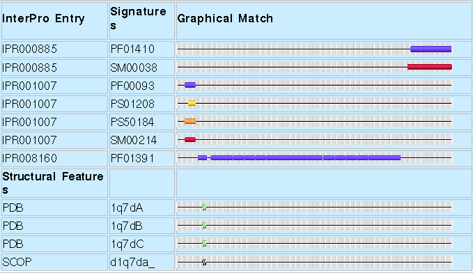
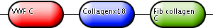
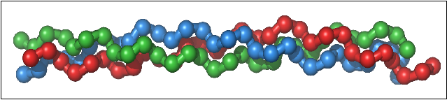
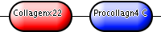
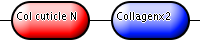

| Molecule of the month: Collagen | Tyrannosaurus rex and collagen |
Collagen is a long, fibrous structural protein that is usually associated with cosmetic enhancements, movie star’s lips and anti-aging lotions. Just as one hopes for these movie stars; there is much more to collagen than what appears on the surface. Collagen is the most abundant protein in mammals, making up more than a third of the body’s protein. It is the major structural glycoprotein of connective tissues and is described as the glue that binds an animal together. Even its name comes from the Greek root "kólla", meaning glue1.
The collagen superfamily has at least 20 collagen types. These have at least 38 distinct polypeptide chains and more than 15 additional proteins that have collagen-like domains2. The majority of the collagen found in the body, however, belongs to the types I, II, III, and IV.
There are a range of post-translational modifications to collagen, which extend the functional range of these proteins. These include hydroxylation of prolyl and lysyl residues, glycosylation, folding into triple-helical conformation, proteolytic conversion of procollagen to collagen and oxidative deamination of certain lysyl and hydroxylysyl residues. The different forms of collagen produce different structures, and are found as the main component of fascia, cartilage, ligaments, tendons, bone, teeth and soft keratin. They also give skin strength and elasticity. Collagen is present in the cornea and the lens of the eye in its crystalline form.
Connective tissue diseases are often the result of defects in the synthesis and secretion of collagen molecules or the deposition of these molecules into extracellular fibres. This results in abnormal fibrillogenesis. The L-enantiomer of ascorbic acid, vitamin C, acts as an electron donor for eight different enzymes, three of which participate in collagen hydroxylation. These reactions add hydroxyl groups to proline or lysine in the collagen molecule via prolyl hydroxylase and lysyl hydroxylase. Hydroxylation allows the collagen molecule to assume its triple helix structure, rendering vitamin C essential to the development and maintenance of collagen rich tissue such as scar tissue, blood vessels and cartilage. Scurvy is the major disease that results from a deficiency in vitamin C, made famous by sailors deprived of fresh fruit and vegetables on long haul ocean navigations. Other major disorders associated with the degradation of collagen are Bullous systemic lupus erythematosus6 and Rheumatoid arthritis, both of which are autoimmune diseases.
The medical and paramedical uses of collagen are fairly diverse. Some of the most important uses are for the treatment of burns and bone reconstruction as well as dental, orthopaedic and surgical treatments. Collagen from porcine or BSE free bovine tissue is usually used for such procedures. A number of alternatives to collagen can be used as soft tissue replacements, including hyaluronic acid and polyacrylamide gel7,8,9, though the safety of these fillers is questionable. Collagen is also used as a main ingredient for many cosmetic products, to which the results of an internet search for “collagen” and “lotion” together will attest.
The image below (Fig.1.) shows the signatures of the human collagen triple helix repeat, protein P02452. It can be subdivided into three regions (seen as non-overlapping signatures in the table, and in the domain architecture in Fig.2.). Each of the domains represent components of the collagen helix, which is dominated by the central repeat, and capped by the Fibrillar Collagen, C-terminal and von Willebrand factor, type C domains. In this case there is no hierarchy of proteins within the domains.
|  |
| Figure 1. A graphical view of the example protein P02452 (Human Collagen alpha-1 chain) as found in an InterPro entry. |
In addition to the graphical view of the signatures found in the proteins of InterPro entries, InterPro provides a summarised view of the domains as well. This is shown below in Fig.2. The first bullet, labelled “VWF C”, represents the single von Willebrand factor, type C domain that occurs at the N terminus of the protein. The second bullet is labelled “Collagenx18” and represents the 18 repeats of the Collagen domain that occur in the middle of the protein. Finally, the last bullet is labelled “Fib collagen C” and it represents the Fibrillar Collagen, C-terminal domain.
|  |
| Figure 2. The domain architecture of the example protein P02452 (Human Collagen alpha-1 chain) as found in an InterPro entry. |
1. IPR000885 Fibrillar collagen, C-terminal:
The exact function of this fibrillar collagen domain is unknown.
It is represented by two signatures: PF01410 and SM00038.
2. IPR001007 von Willebrand factor, type C:
The von Willebrand factor domain is found in various plasma proteins: complement factors B, C2, CR3 and CR4; the integrins (I-domains); collagen types VI, VII, XII and XIV; and other extracellular proteins.
It is represented by four signatures: PF00093, PS01208, PS50184 and SM00214.
1. IPR008160 Collagen triple helix repeat:
Members of this entry belong to the collagen superfamily.
It is represented by the Pfam signature PF01391.
This protein is also matched by the following signatures that are not integrated into the entry:
PD000007: Collagen triple helix repeat
PD002078: Fibrillar collagen, C-terminal
PTHR10499: Collagen alpha chain
PTHR10499:SF127: Collagen alpha 1(I) chain

Collagen’s triple helical structure, known as the Madras helix, was first proposed by G. N. Ramachandran and G. Kartha in 1954. The collagen molecule subunit (tropocollagen) is a rod made up of three left-handed helices (distinct from the right handed alpha helix). The three helices are twisted together into a right-handed coiled coil. Collagen is distinguished by the regular arrangement of amino acids in each of the three chains of these collagen subunits. Glycine nearly always occurs at every third residue, proline makes up about 9% of collagen and hydroxylproline (Hyp) and hydroxylysine are also found. These latter two are both the uncommon results of post translational modifications. The sequence normally follows the pattern Gly-Pro-Y or Gly-X-Hyp, where X and Y may be any of various other amino acid residues. Gly-Pro-Hyp occurs particularly frequently and this regular repetition and high glycine content is found in only a few other fibrous proteins, including silk fibroin (another fibre of high tensile strength). Each chain is over 1400 amino acids long.
Collagen biosynthesis and assembly follow the normal pathway for secreted proteins. Glycosylation of procollagen occurs in the rough Endoplasmic Reticulum (ER) and Golgi complex. Galactose and glucose residues are added to hydroxylysine residues, and long oligosaccharides are added to certain asparagine residues in the C-terminal propeptide. This is a segment, also found at the N-terminal, which is found in procollagen molecules but not in mature collagen. Specific proline and lysine residues in the middle of the chains are also hydroxylated by membrane-bound hydroxylases. Intrachain disulfide bonds between the N- and C-terminal propeptide sequences align the three chains before the triple helix forms in the ER. The central portions of the chains join, from the C to the N terminus, to form a triple helix. Fibrils and fibres are formed in the extracellular space once the procollagen chains have been synthesised.
Collagenases (the metalloendopeptidases EC 3.4.24; e.g. IPR002169) are the enzymes that break down the peptide bonds in collagen (Merops families M9 and U32). Peptidase U32 can be found in InterPro as well, in the entry IPR001539. Peptidase M9 (microbial collagenase) is found in the InterPro entry IPR002169. They assist in destroying extracellular structures during the pathogenesis of bacteria such as those from the genus Clostridium as well as Vibrio. Collogenases are exotoxins; an excreted protein that causes damage to host cells by destroying them or by disrupting their normal metabolism. This enzyme targets the connective tissue in muscle cells and other organs and can help facilitate the spread of gas gangrene; a deadly form of gangrene caused by the exotoxins of anaerobic bacteria.
Six species of metalloendopeptidase acting on native collagen can be isolated from the medium of Clostridium histolyticum. Despite this, the potential positive medical contributions of collagenases have also been investigated. Most notable is the US Food and Drug Administration (the FDA) approved product SANTYL for wound healing, as well as the use if collagenase for the treatment of Dupuytren’s Disease10, Peyronie’s Disease11 and the possibility of using it for the treatment of Glaucoma12.
Table 1. below contains entries for collagens from various organisms as well as some collagenases found in the UniProtKB database. Links are provided to view the original UniProtKB protein entries (UniProt column accession numbers) and their display in InterPro can be viewed by clicking on the InterPro icon in the “Graphic match” column.
Table 1. Examples of collagens and collagenases from various organisms, as well as their domain domain architectures, links to UniProtKB and full graphic views in InterPro.
| UniProt | Protein name | Organism | Domain Architecture | Graphic match | |
|---|---|---|---|---|---|
| Type (I) collagen | P02452 | Collagen alpha-1(I) chain | Human | ||
| Type (II) collagen | P02458 | Collagen alpha-1(II) chain | Human | ||
| Type (II) collagen | P02461 | Collagen alpha-1(III) chain | Human | ||
| Type (II) collagen | P28481 | Collagen alpha-1(II) chain | Mouse | ||
| Type (IV) collagen | P02463 | Collagen alpha-1(IV) chain | Mouse |  | |
| Cuticle collagen | P18835 | Cuticle collagen | C. elegans |  | |
| Collagenase | Q7AE60 | Putative collagenase | E. coli | ||
| Collagenase | Q46085 | Collagenase colH | C. histolyticum |